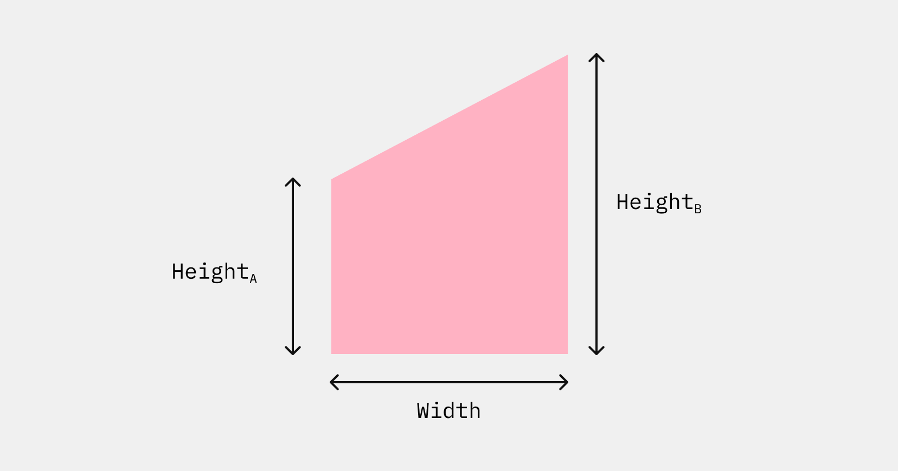
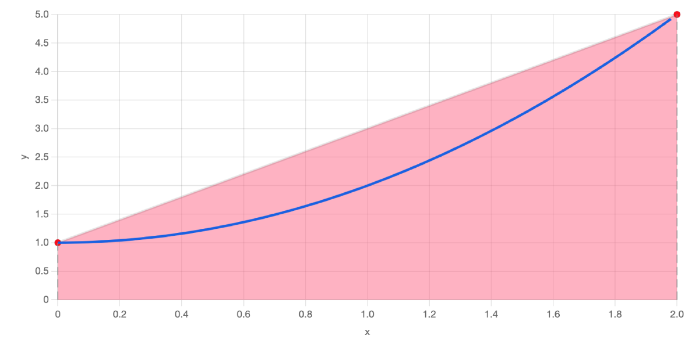
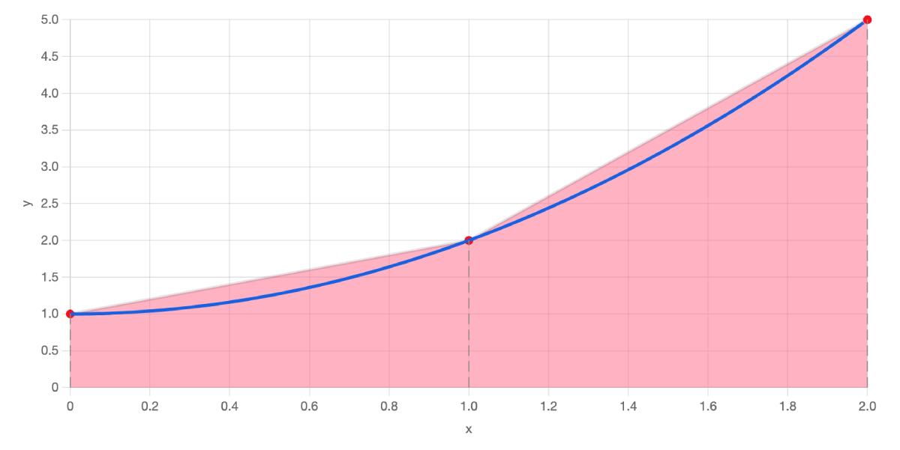
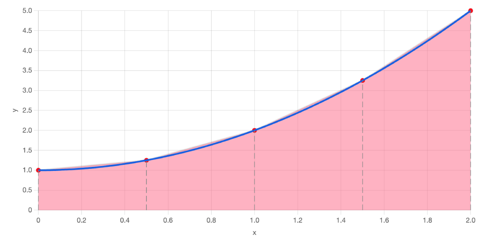

The trapezoidal rule is a method we can use to find the area underneath a curve. The technique works by approximating the curve with a series of trapezoids (or trapeziums as they are called in the UK).
The method is helpful because we can calculate the area of a trapezoid using a simple formula. Looking at the example below:

The area of this trapezium is:
$$ 0.5 \times (Height_A + Height_B) \times Width $$
Now, if you have a curve, say \( y = x^2 +1 \) and you want to find the area that is underneath the curve between \( x = 0 \) and \( x = 2 \), you could create a very rough estimate by drawing a trapezium, which we've given a pink colour, like so:

In this particular example, HeightA is 1, HeightB is 5 and the width is 2, so the area of the trapezoid is calculated to be:
$$ 0.5 \times (1 + 5) \times 2 = 6 $$
Looking at the chart above, we can see that in reality, this is an overestimate, because the trapezoid has a bigger area than the area below the curve. But what if we used a combination of 2 trapezoids instead?

These two trapezoids give a better approximation of the area under the curve. In this case, the area is calculated by adding the areas of the two individual trapezoids.
The first trapezoid has HeightA = 1, HeightB = 2 and width = 1, giving an area of 0.5 × (1 + 2) × 1 = 1.5.
The second trapezoid has HeightA = 2, HeightB = 5 and width = 1, giving an area of 0.5 × (2 + 5) × 1 = 3.5.
So, adding these together gives a total trapezoid area of 1.5 + 3.5 = 5.0.
We could improve things even more by including more trapezoids. Here's what the graph looks like with 4.

Here are the calculations for finding the areas of the four trapezoids:
|
Calculation |
Area |
| Trapezium 1 | 0.5 × (1.000 + 1.250) × 0.500 | 0.563 |
| Trapezium 2 | 0.5 × (1.250 + 2.000) × 0.500 | 0.813 |
| Trapezium 3 | 0.5 × (2.000 + 3.250) × 0.500 | 1.313 |
| Trapezium 4 | 0.5 × (3.250 + 5.000) × 0.500 | 2.063 |
| Sum of all Trapezium areas | 4.750 |
These four trapezoids do a pretty good job, but we don't need to stop there. We can add even more to improve our estimation. How about 10? Use the interface at the of the page to change the number of trapezoids, then hit the Update button to run the calculation.
If you are familiar with calculus, you might know that we can use integration to find the exact value of this area. The answer is \( 4 \frac{2}{3} \), or 4.67 to 2 decimal places. If you use the interactive tool above to draw 20 trapezoids, you'll see that the answer that is calculated is also 4.67.
Equation for Trapezoid Rule
The demo above illustrates how the rule works visually, but there is also an equation you can use without needing to draw the trapezoids. If you look closely at the tables of calculations above, you may notice a pattern. The pattern becomes more clear the more trapezoids are used. Each term of the calculation involves a multiplication by 0.5, as well as a multiplication by the width (the width is the same value for each trapezoid). When adding all ther values up, the very first height (which we will call \( y_0 \) in our equation) and the very last height (which we'll call \(y_n\)) are included once, and all the other heights are included twice.
Putting this all together, the Trapezoid Rule can be condensed into the following formula. Don't let the symbols confuse you, it's exactly the same process as we walked through above.
$$ Area = 0.5 \times width \times (y_0 + 2y_1 + 2y_2 + \dots + 2y_{n-1} + y_n) $$
In the equation the terms \( y_0, y_1 \dots\ y_n \) represent the heights of the sides of the trapezoids. Here is the graph of \( y = x^2 +1 \) with these y values indicated. There are 4 trapezoids, so \( n = 4\).